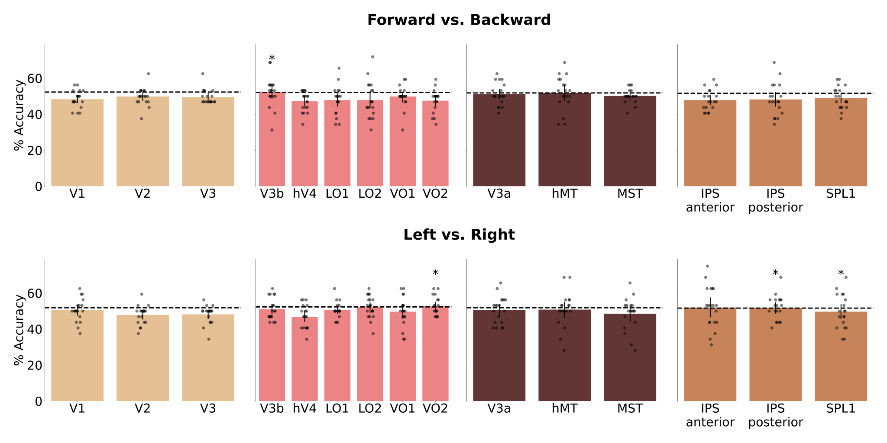

#!/gpfs01/bartels/user/cdemircan/miniconda3/envs/lr_bartels/bin/python
import argparse
import glob
import numpy as np
import pandas as pd
from sklearn.pipeline import Pipeline
from sklearn.linear_model import LogisticRegression
from sklearn.model_selection import PredefinedSplit, permutation_test_score
from nilearn import image
from nilearn.glm.first_level import FirstLevelModel
from nilearn.maskers import NiftiMasker
parser = argparse.ArgumentParser()
parser.add_argument("--workingdir", "-w")
parser.add_argument("--sub", "-s")
parser.add_argument("--roi", "-r")
parser.add_argument("--targetdecode", "-t")
parser.add_argument("--design", "-d")
parser.add_argument("--permutations", "-p")
args = parser.parse_args()
project_root = args.workingdir
participant = f"sub-{str(args.sub).zfill(2)}"
roi = args.roi
target_decode = args.targetdecode
design = args.design
permutations = int(args.permutations)
functional_path = f"{project_root}/data/derivatives/fMRIprep/{participant}/func"
target_event_dict = {"lr": ["left", "right"], "fb": ["forward", "backward"]}
target_events = target_event_dict[target_decode]
TR = 1.2
# get file names
func_path = f"{project_root}/data/derivatives/fMRIprep/{participant}/func"
if design == "compact":
event_files = glob.glob(
f"{project_root}/data/bids/{participant}/func/{participant}*events.tsv"
)
elif design == "expanded":
event_files = glob.glob(
f"{project_root}/data/bids/{participant}/func/expanded*events.tsv"
)
target_files = glob.glob(
f"{project_root}/data/bids/{participant}/func/{participant}*events.tsv"
)
conf_files = glob.glob(f"{func_path}/*confounds_timeseries.tsv")
func_files = glob.glob(f"{func_path}/*T1w_desc-preproc_bold.nii.gz")
# split into train (real) and test (implied)
target_files_train = [x for x in target_files if "train" in x]
target_files_test = [x for x in target_files if "test" in x]
event_files_train = [x for x in event_files if "train" in x]
event_files_test = [x for x in event_files if "test" in x]
conf_files_train = [x for x in conf_files if "train" in x]
conf_files_test = [x for x in conf_files if "test" in x]
func_files_train = [x for x in func_files if "train" in x]
func_files_test = [x for x in func_files if "test" in x]
# sort them in the right order
target_files_train = sorted(
target_files_train, key=lambda x: int(x.split("run-")[1].split("_events")[0])
)
event_files_train = sorted(
event_files_train, key=lambda x: int(x.split("run-")[1].split("_events")[0])
)
conf_files_train = sorted(
conf_files_train, key=lambda x: int(x.split("run-")[1].split("_desc")[0])
)
func_files_train = sorted(
func_files_train, key=lambda x: int(x.split("run-")[1].split("_space")[0])
)
target_files_test = sorted(
target_files_test, key=lambda x: int(x.split("run-")[1].split("_events")[0])
)
event_files_test = sorted(
event_files_test, key=lambda x: int(x.split("run-")[1].split("_events")[0])
)
conf_files_test = sorted(
conf_files_test, key=lambda x: int(x.split("run-")[1].split("_desc")[0])
)
func_files_test = sorted(
func_files_test, key=lambda x: int(x.split("run-")[1].split("_space")[0])
)
# read the files
targets_train = [pd.read_table(x) for x in target_files_train]
targets_train = [
x[(x["trial_type"] == target_events[0]) | (x["trial_type"] == target_events[1])]
for x in targets_train
]
targets_test = [pd.read_table(x) for x in target_files_test]
targets_test = [
x[(x["trial_type"] == target_events[0]) | (x["trial_type"] == target_events[1])]
for x in targets_test
]
events_train = [pd.read_table(x) for x in event_files_train]
events_test = [pd.read_table(x) for x in event_files_test]
confs_train = [
pd.read_table(x)[["trans_x", "trans_y", "trans_z", "rot_x", "rot_y", "rot_z"]]
for x in conf_files_train
]
confs_test = [
pd.read_table(x)[["trans_x", "trans_y", "trans_z", "rot_x", "rot_y", "rot_z"]]
for x in conf_files_test
]
# get the ROI mask
roi_mask = f"{project_root}/data/derivatives/fMRIprep/{participant}/ROI/{roi}.nii"
effects_train = []
conditions_label_train = []
session_label_train = []
for session in range(len(func_files_train)):
glm = FirstLevelModel(
t_r=TR,
mask_img=roi_mask,
high_pass=0.01,
hrf_model="spm",
smoothing_fwhm=None,
n_jobs=-1,
memory=None,
)
# fit the glm
glm.fit(
func_files_train[session],
events=events_train[session],
confounds=confs_train[session],
)
# set up contrasts: one per condition
conditions = events_train[session][
events_train[session]["trial_type"].str.startswith(target_events[0])
| (events_train[session]["trial_type"].str.startswith(target_events[1]))
]["trial_type"].unique()
# for the expanded glm targets need to repeat
if design == "compact":
current_targets = conditions
elif design == "expanded":
current_targets = []
for cond in conditions:
current_targets.append(cond.split("_")[0])
# get z scored betas and labels with associated functional runs
for target, condition in zip(current_targets, conditions):
effects_train.append(glm.compute_contrast(condition, output_type="z_score"))
conditions_label_train.append(target)
session_label_train.append(func_files_train[session])
effects_test = []
conditions_label_test = []
session_label_test = []
for session in range(len(func_files_test)):
glm = FirstLevelModel(
t_r=TR,
mask_img=roi_mask,
high_pass=0.01,
hrf_model="spm",
smoothing_fwhm=None,
n_jobs=-1,
memory=None,
)
# fit the glm
glm.fit(
func_files_test[session],
events=events_test[session],
confounds=confs_test[session],
)
# set up contrasts: one per condition
conditions = events_test[session][
events_test[session]["trial_type"].str.startswith(target_events[0])
| (events_test[session]["trial_type"].str.startswith(target_events[1]))
]["trial_type"].unique()
# for the expanded glm targets need to repeat
if design == "compact":
current_targets = conditions
elif design == "expanded":
current_targets = []
for cond in conditions:
current_targets.append(cond.split("_")[0])
# get z scored betas and labels with associated functional runs
for target, condition in zip(current_targets, conditions):
effects_test.append(glm.compute_contrast(condition, output_type="z_score"))
conditions_label_test.append(target)
session_label_test.append(func_files_test[session])
n_runs = 8
n_conditions = 8 if design == "expanded" else 2
nifti_masker_train = NiftiMasker(
mask_img=roi_mask,
standardize=False,
runs=session_label_train,
smoothing_fwhm=None,
memory_level=1,
)
X_train = nifti_masker_train.fit_transform(effects_train)
cv_train_split_idx = np.zeros(X_train.shape[0])
y_train = np.array(conditions_label_train)
nifti_masker_test = NiftiMasker(
mask_img=roi_mask,
standardize=False,
runs=session_label_test,
smoothing_fwhm=None,
memory_level=1,
)
X_test = nifti_masker_test.fit_transform(effects_test)
cv_test_split_idx = np.ones(X_test.shape[0])
y_test = np.array(conditions_label_test)
X = np.concatenate([X_train,X_test])
y = np.concatenate([y_train,y_test])
cv_split_idx = np.concatenate([cv_train_split_idx,cv_test_split_idx])
predefined_split = PredefinedSplit(cv_split_idx)
groups = [[x] * n_conditions for x in range(n_runs)]
groups = [item for items in groups for item in items]
groups += groups
classifier = LogisticRegression(penalty="l2", C=0.5, max_iter=4000, solver="lbfgs")
decode_pipeline = Pipeline([("logistic_regression", classifier)])
real_score, permutation_scores, _ = permutation_test_score(
decode_pipeline,
X,
y,
n_permutations=permutations,
cv=predefined_split,
groups=groups,
random_state=1234,
n_jobs=-1
)
permutation_scores_list = permutation_scores.tolist()
permutation_scores_list.append(real_score)
decode_dict = {
"accuracy": permutation_scores_list,
"type": ["permutation"] * permutations + ["real"],
"participant": [participant] * (permutations + 1),
"roi": [roi] * (permutations + 1),
"design": [design] * (permutations + 1),
"target": [target_decode] * (permutations + 1),
}
df = pd.DataFrame(decode_dict)
df.to_csv(
f"{project_root}/data/decoding/cross/{participant}_{target_decode}_{roi}_{design}.csv",
index=False,
)Cross Decoding
Here, I tried to decode the direction of motion, using a classifier that was trained and tested on different types of data. Meaning we trained a classifier in a two fold cross-validated fashion, where we tested on real motion and test on implied motion, and then trained on implied motion and tested on real motion. The classification problem was again split into two (left vs. right and forward vs. backward), and the rest of the pipeline was the same as the previous decoding pipeline. The whole classification procedure was as follows.
Using the Expanded Design Matrix

Using the Compact Design Matrix
